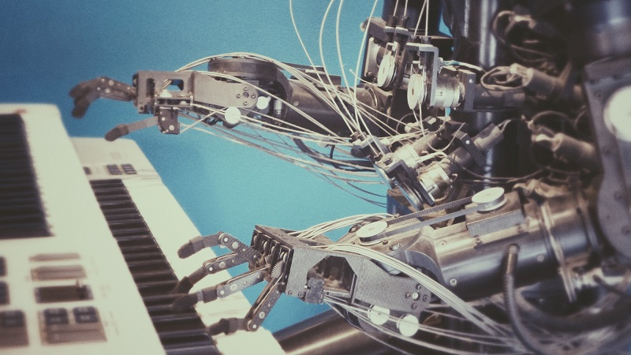
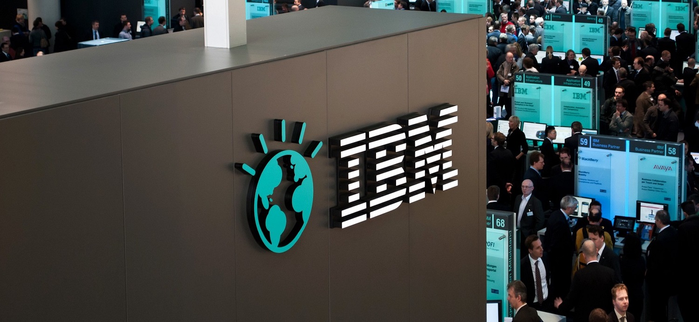

Artifical Intelligence (AI)
Artificial intelligence (AI) is intelligence demonstrated by machines,as opposed to the natural intelligence displayed by humans or animals.Leading AI textbooks define the field as the study of "intelligent agents":any system that perceives its environment and takes actions that maximize its chance of achieving its goals(Wikipedia).
Internet of things(IoT)
The Internet of things (IoT) describes the network of physical objects, so known as, "things" — that are embedded with sensors, software, and other technologies that is used for the purpose of connecting and exchanging data with other devices and systems over the Internet (Wikipedia).
Cognitive Computing
Cognitive computing (CC) refers to technology platforms that,broadly speaking,are based on the scientific disciplines of artificial intelligence and signal processing.Machine learning, reasoning,natural language processing,speech recognition and vision, human–computer interaction,dialog and narrative generation, among other technologies (Wikipedia).

Cloud Computing
Cloud computing is the on-demand availability of computer system resources, especially data storage (cloud storage) and computing power, without direct active management by the user. Large clouds often have functions distributed over multiple locations, each location being a data center(Wikipedia).
Robotics
Robotics is an interdisciplinary field that integrates computer science and engineering. Robotics involves design, construction, operation, and use of robots. The goal of robotics is to design machines that can help and assist humans(Wikipedia).
Blockchain
A blockchain is a growing list of records, called blocks, that are linked together using cryptography. Each block contains a cryptographic hash of the previous block, a timestamp, and transaction data (generally represented as a Merkle tree)(Wikipedia).
